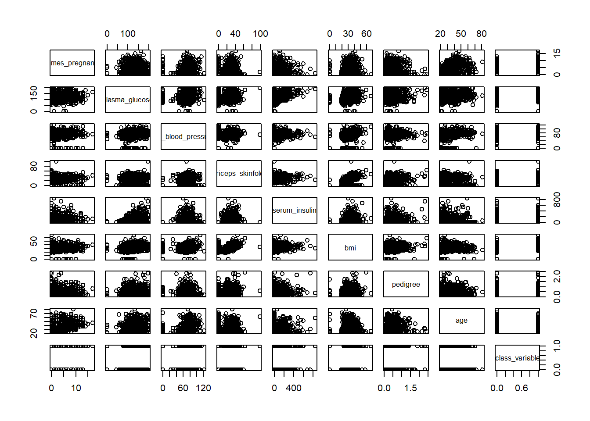
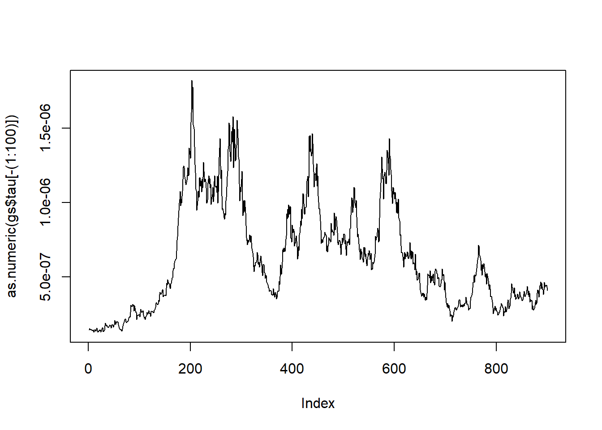
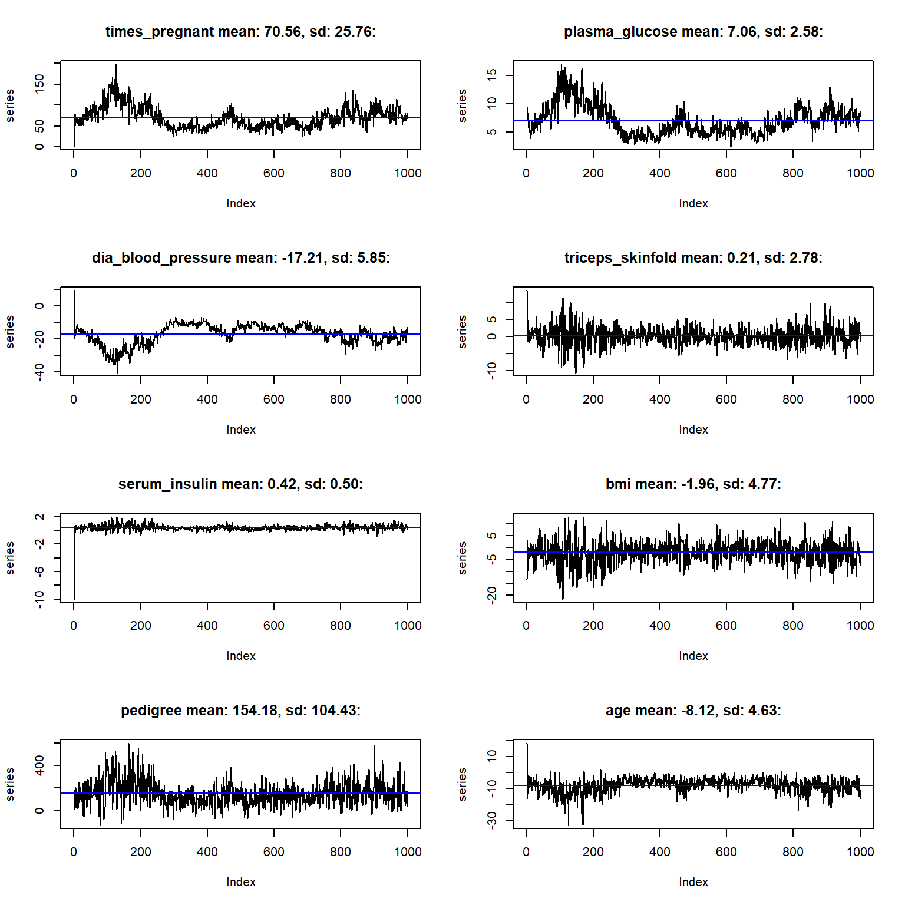
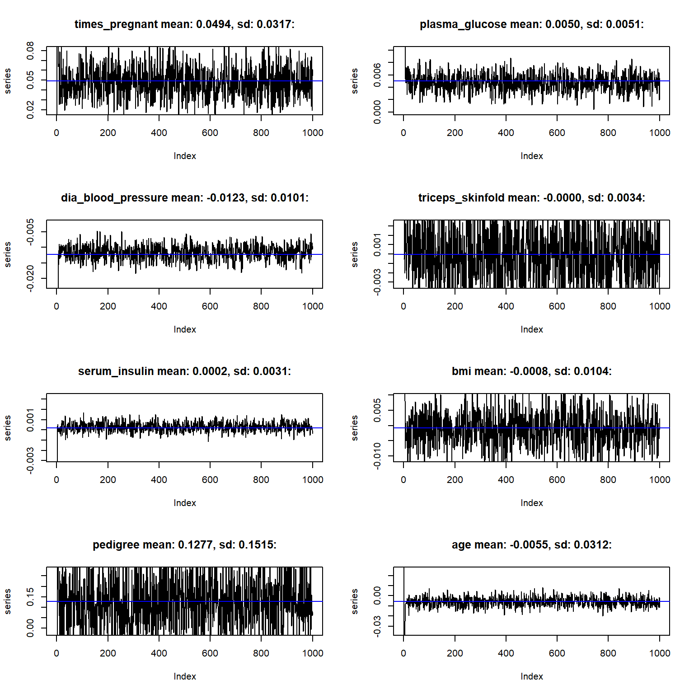
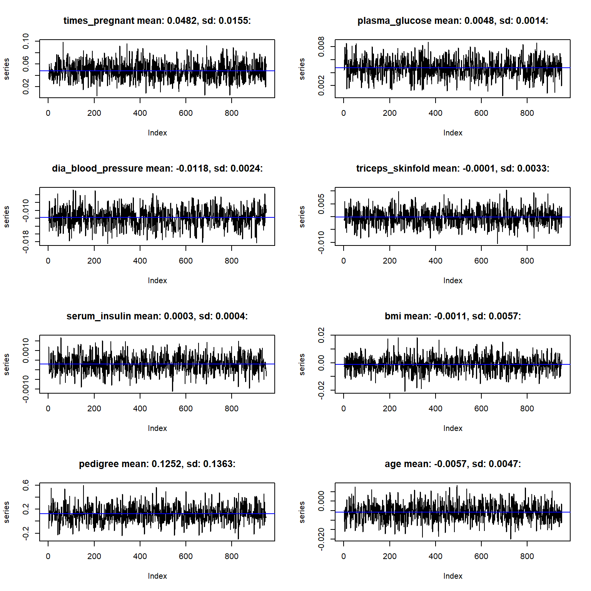

4 List three: Gibbs sampler
library(tidyverse)
library(readr)
library(knitr)
library(mvtnorm)
library(Matrix)
library(progress)Load Data and Explore
# Read data from Github
data <- read_csv("https://raw.githubusercontent.com/sinead/sds383d/master/data/pima.csv")summary(data)## times_pregnant plasma_glucose dia_blood_pressure triceps_skinfold
## Min. : 0.000 Min. : 0.0 Min. : 0.00 Min. : 0.00
## 1st Qu.: 1.000 1st Qu.: 99.0 1st Qu.: 62.00 1st Qu.: 0.00
## Median : 3.000 Median :117.0 Median : 72.00 Median :23.00
## Mean : 3.845 Mean :120.9 Mean : 69.11 Mean :20.54
## 3rd Qu.: 6.000 3rd Qu.:140.2 3rd Qu.: 80.00 3rd Qu.:32.00
## Max. :17.000 Max. :199.0 Max. :122.00 Max. :99.00
## serum_insulin bmi pedigree age
## Min. : 0.0 Min. : 0.00 Min. :0.0780 Min. :21.00
## 1st Qu.: 0.0 1st Qu.:27.30 1st Qu.:0.2437 1st Qu.:24.00
## Median : 30.5 Median :32.00 Median :0.3725 Median :29.00
## Mean : 79.8 Mean :31.99 Mean :0.4719 Mean :33.24
## 3rd Qu.:127.2 3rd Qu.:36.60 3rd Qu.:0.6262 3rd Qu.:41.00
## Max. :846.0 Max. :67.10 Max. :2.4200 Max. :81.00
## class_variable
## Min. :0.000
## 1st Qu.:0.000
## Median :0.000
## Mean :0.349
## 3rd Qu.:1.000
## Max. :1.000pairs(data)
Let’s save features and targets in arrays \(X\) and \(y\)
# Features
X <- data %>%
select(-class_variable) %>%
data.matrix() %>%
Matrix()
# Target
y <- data %>%
pull(class_variable) %>%
Matrix()
# Problem dimensions
n <- nrow(X)
d <- ncol(X)Gibbs Sampler
Hyperparameters of prior
# Matrix package is necessary for stability and efficiency
prior_hyperparams <- list(
# Z ~ N(x'beta, tau * I)
# beta ~ N(beta0, tau * kappa_0)
# tau ~ Gamma(a_0, b_0);
kappa_0 = 10.0 * Diagonal(d),
beta_0 = Matrix(numeric(d)), # zeros of size d x 1
a_0 = 0.1,
b_0 = 5.0
)Conditional distributions of the latent variable.
\[ z_i \mid \beta,\tau, x_i, y_i \sim = \begin{cases} N(x_i'\beta, \tau) \text{ truncated to } (0,+\infty) & \text{ if } y_i = 1 \\ N(x_i'\beta, \tau) \text{ truncated to } (-\infty,0) & \text{ if } y_i = 0 \end{cases} \]
z_conditional <- function(beta, tau, X, y) {
mean <- X %*% beta
sd <- sqrt(1 / tau)
sign <- ifelse(y == 1, 1, -1)
map_dbl(1:length(y), function(i) sign[i] * abs(rnorm(1, mean[i], sd)))
}The posterior of \(\beta\) and \(\tau\) depend only on an updated version of the hyperparameters. Here they are
update_hyperparams <- function(prior_hyperparams, X, z) {
ph <- prior_hyperparams
kappa_n <- crossprod(X) + ph$kappa_0
beta_n <- solve(kappa_n, crossprod(X, z) + ph$kappa_0 %*% ph$beta_0)
a_n <- ph$a_0 + nrow(X) / 2
b_n <- ph$b_0 +
0.5 * drop(sum(z^2) + t(ph$beta_0) %*% ph$kappa_0 %*% ph$beta_0 - t(beta_n) %*% kappa_n %*% beta_n)
list(kappa_n = kappa_n, beta_n = beta_n, a_n = a_n, b_n = b_n)
}Now we can easily sample from beta
\[ \beta \mid \tau, z_i, x_i \sim N(\beta_n, \tau \kappa_n) \]
beta_conditional <- function(tau, posterior_hyperparams) {
sigma = as.matrix(solve(posterior_hyperparams$kappa_n * tau))
mean = drop(posterior_hyperparams$beta_n)
drop(rmvnorm(1, mean, sigma))
}And now for \(\tau\)
\[ \tau \mid z_i, x_i \sim \textit{Gamma}(a_n, b_n) \]
tau_conditional <- function(posterior_hyperparams) {
rgamma(1, shape = posterior_hyperparams$a_n, rate = posterior_hyperparams$b_n)
}Our full posterior ir \[ p(\tau, \beta, z, \mid X, y) \] which we can sample iteratively from the three conditionals above.
Now the Gibbs sampler iteration is easy
gibbs_sampler <- function(X, y, prior_hyperparams, niter) {
# Progress bar
pb <- progress_bar$new(total = niter)
# Reserve space for traces
tau <- vector("list", niter)
beta <- vector("list", niter)
z <- vector("list", niter)
# Initialize
params <- prior_hyperparams
names(params) <- gsub("_0", "_n", names(params))
tau[[1]] <- tau_conditional(params)
beta[[1]] <- beta_conditional(tau[[1]], params)
z[[1]] <- z_conditional(beta[[1]], tau[[1]], X, y)
params <- update_hyperparams(prior_hyperparams, X, z[[1]])
# Iterate
for (i in 2:niter) {
tau[[i]] <- tau_conditional(params)
beta[[i]] <- beta_conditional(tau[[i]], params)
z[[i]] <- z_conditional(beta[[i]], tau[[i]], X, y)
params <- update_hyperparams(prior_hyperparams, X, z[[i]])
pb$tick()
}
list(beta = beta, tau = tau, z = z)
}Now run it!
n_iter <- 1000
gs <- gibbs_sampler(X, y, prior_hyperparams, n_iter)
plot(as.numeric(gs$tau[-(1:100)]), type = "l")
beta <- Reduce(cbind, gs$beta)
par(mfrow = c(4,2))
for (i in 1:8) {
series <- beta[i, ]
series_name <- sprintf("%s mean: %0.2f, sd: %0.2f:", rownames(beta)[i], mean(series), sd(series))
plot(series, type = "l", main = series_name)
abline(h = mean(series), col = "blue")
}
Predictions
beta_mean <- apply(beta, 1, mean)
y_hat <- ifelse(X %*% beta_mean > 0, 1, 0)
tbl <- table(drop(y), y_hat)
print(tbl)## y_hat
## 0 1
## 0 432 68
## 1 170 98Total accuracy is
sum(diag(tbl)) / sum(tbl)## [1] 0.6901042A simpler Gibbs Sampler
# Matrix package is necessary for stability and efficiency
prior_hyperparams2 <- list(
# Z ~ N(x'beta, tau * I)
# beta ~ N(beta0, tau * kappa_0)
kappa_0 = 0.01 * Diagonal(d),
beta_0 = Matrix(numeric(d)) # zeros of size d x 1
)update_hyperparams2 <- function(prior_hyperparams, X, z) {
kappa_n <- crossprod(X) + prior_hyperparams$kappa_0
beta_n <- solve(kappa_n, crossprod(X, z) + prior_hyperparams$kappa_0 %*% prior_hyperparams$beta_0)
list(kappa_n = kappa_n, beta_n = beta_n)
}gibbs_sampler2 <- function(X, y, prior_hyperparams2, niter) {
# Progress bar
pb <- progress_bar$new(total = niter)
# Reserve space for traces
beta <- vector("list", niter)
z <- vector("list", niter)
tau <- 1.0 # fixed
# Initialize
params <- prior_hyperparams
names(params) <- gsub("_0", "_n", names(params))
beta[[1]] <- beta_conditional(tau, params)
z[[1]] <- z_conditional(beta[[1]], tau, X, y)
params <- update_hyperparams2(prior_hyperparams2, X, z[[1]])
# Iterate
for (i in 2:niter) {
beta[[i]] <- beta_conditional(tau, params)
z[[i]] <- z_conditional(beta[[i]], tau, X, y)
params <- update_hyperparams2(prior_hyperparams2 , X, z[[i]])
pb$tick()
}
list(beta = beta, z = z)
}n_iter <- 1000
gs2 <- gibbs_sampler2(X, y, prior_hyperparams2, n_iter)beta <- Reduce(cbind, gs2$beta)
par(mfrow = c(4,2))
for (i in 1:8) {
series <- beta[i, ]
mean_series <- mean(series)
sd_series <- sd(series)
series_name <- sprintf("%s mean: %0.4f, sd: %0.4f:", rownames(beta)[i], mean_series, sd_series)
plot(series, type = "l", main = series_name, ylim = c(mean_series - sd_series, mean_series + sd_series))
abline(h = mean(series), col = "blue")
}
Same thing but with burning
burnin <- 50
beta <- beta[ ,-(1:50)]
par(mfrow = c(4,2))
for (i in 1:8) {
series <- beta[i, ]
mean_series <- mean(series)
sd_series <- sd(series)
series_name <- sprintf("%s mean: %0.4f, sd: %0.4f:", rownames(beta)[i], mean_series, sd_series)
plot(series, type = "l", main = series_name)
abline(h = mean(series), col = "blue")
}
Predictions
beta_mean <- apply(beta, 1, mean)
y_hat <- ifelse(X %*% beta_mean > 0, 1, 0)
tbl <- table(drop(y), y_hat)
print(tbl)## y_hat
## 0 1
## 0 433 67
## 1 171 97Total accuracy is
sum(diag(tbl)) / sum(tbl)## [1] 0.6901042